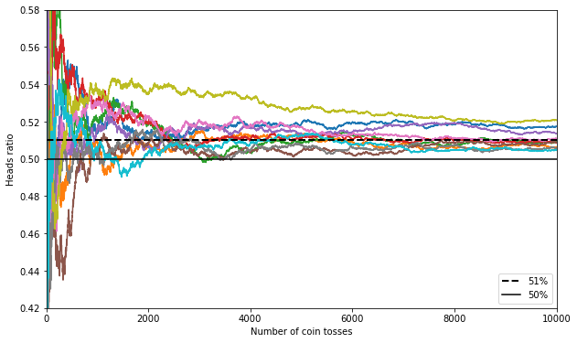

Ensemble Learning
Contents
Ensemble Learning¶
import matplotlib.pyplot as plt
import numpy as np
import pandas as pd
import matplotlib as mpl
Voting classifiers¶
heads_proba = 0.51
coin_tosses = (np.random.rand(10000, 10) < heads_proba).astype(np.int32)
cumulative_heads_ratio = np.cumsum(coin_tosses, axis=0) / np.arange(
1, 10001).reshape(-1, 1)
_, ax = plt.subplots(figsize=(10, 6))
ax.plot(cumulative_heads_ratio)
ax.plot([0, 10000], [0.51, 0.51], "k--", lw=2, label="51%")
ax.plot([0, 10000], [0.5, 0.5], "k-", label="50%")
ax.set(xlabel="Number of coin tosses",
ylabel="Heads ratio",
xlim=[0, 10000],
ylim=[0.42, 0.58])
ax.legend(loc="lower right")
plt.show()

from sklearn.model_selection import train_test_split
from sklearn.datasets import make_moons
---------------------------------------------------------------------------
ModuleNotFoundError Traceback (most recent call last)
Input In [5], in <cell line: 1>()
----> 1 from sklearn.model_selection import train_test_split
2 from sklearn.datasets import make_moons
ModuleNotFoundError: No module named 'sklearn'
X, y = make_moons(n_samples=500, noise=0.30, random_state=42)
X_train, X_test, y_train, y_test = train_test_split(X, y, random_state=42)
---------------------------------------------------------------------------
NameError Traceback (most recent call last)
Input In [6], in <cell line: 1>()
----> 1 X, y = make_moons(n_samples=500, noise=0.30, random_state=42)
2 X_train, X_test, y_train, y_test = train_test_split(X, y, random_state=42)
NameError: name 'make_moons' is not defined
from sklearn.ensemble import RandomForestClassifier, VotingClassifier, BaggingClassifier
from sklearn.linear_model import LogisticRegression
from sklearn.svm import SVC
---------------------------------------------------------------------------
ModuleNotFoundError Traceback (most recent call last)
Input In [7], in <cell line: 1>()
----> 1 from sklearn.ensemble import RandomForestClassifier, VotingClassifier, BaggingClassifier
2 from sklearn.linear_model import LogisticRegression
3 from sklearn.svm import SVC
ModuleNotFoundError: No module named 'sklearn'
log_clf = LogisticRegression(solver="lbfgs", random_state=42)
rnd_clf = RandomForestClassifier(n_estimators=100, random_state=42)
svm_clf = SVC(gamma="scale", random_state=42)
voting_clf = VotingClassifier(estimators=[('lr', log_clf), ('rf', rnd_clf),
('svc', svm_clf)],
voting='hard')
---------------------------------------------------------------------------
NameError Traceback (most recent call last)
Input In [8], in <cell line: 1>()
----> 1 log_clf = LogisticRegression(solver="lbfgs", random_state=42)
2 rnd_clf = RandomForestClassifier(n_estimators=100, random_state=42)
3 svm_clf = SVC(gamma="scale", random_state=42)
NameError: name 'LogisticRegression' is not defined
voting_clf.fit(X_train, y_train)
---------------------------------------------------------------------------
NameError Traceback (most recent call last)
Input In [9], in <cell line: 1>()
----> 1 voting_clf.fit(X_train, y_train)
NameError: name 'voting_clf' is not defined
from sklearn.metrics import accuracy_score
from sklearn.tree import DecisionTreeClassifier
---------------------------------------------------------------------------
ModuleNotFoundError Traceback (most recent call last)
Input In [10], in <cell line: 1>()
----> 1 from sklearn.metrics import accuracy_score
2 from sklearn.tree import DecisionTreeClassifier
ModuleNotFoundError: No module named 'sklearn'
for clf in (log_clf, rnd_clf, svm_clf, voting_clf):
clf.fit(X_train, y_train)
y_pred = clf.predict(X_test)
print(clf.__class__.__name__, accuracy_score(y_test, y_pred))
---------------------------------------------------------------------------
NameError Traceback (most recent call last)
Input In [11], in <cell line: 1>()
----> 1 for clf in (log_clf, rnd_clf, svm_clf, voting_clf):
2 clf.fit(X_train, y_train)
3 y_pred = clf.predict(X_test)
NameError: name 'log_clf' is not defined
Soft voting:
log_clf = LogisticRegression(solver="lbfgs", random_state=42)
rnd_clf = RandomForestClassifier(n_estimators=100, random_state=42)
svm_clf = SVC(gamma="scale", probability=True, random_state=42)
voting_clf = VotingClassifier(estimators=[('lr', log_clf), ('rf', rnd_clf),
('svc', svm_clf)],
voting='soft')
voting_clf.fit(X_train, y_train)
---------------------------------------------------------------------------
NameError Traceback (most recent call last)
Input In [12], in <cell line: 1>()
----> 1 log_clf = LogisticRegression(solver="lbfgs", random_state=42)
2 rnd_clf = RandomForestClassifier(n_estimators=100, random_state=42)
3 svm_clf = SVC(gamma="scale", probability=True, random_state=42)
NameError: name 'LogisticRegression' is not defined
for clf in (log_clf, rnd_clf, svm_clf, voting_clf):
clf.fit(X_train, y_train)
y_pred = clf.predict(X_test)
print(clf.__class__.__name__, accuracy_score(y_test, y_pred))
---------------------------------------------------------------------------
NameError Traceback (most recent call last)
Input In [13], in <cell line: 1>()
----> 1 for clf in (log_clf, rnd_clf, svm_clf, voting_clf):
2 clf.fit(X_train, y_train)
3 y_pred = clf.predict(X_test)
NameError: name 'log_clf' is not defined
Bagging ensembles¶
from sklearn.ensemble import BaggingClassifier
from sklearn.tree import DecisionTreeClassifier
---------------------------------------------------------------------------
ModuleNotFoundError Traceback (most recent call last)
Input In [14], in <cell line: 1>()
----> 1 from sklearn.ensemble import BaggingClassifier
2 from sklearn.tree import DecisionTreeClassifier
ModuleNotFoundError: No module named 'sklearn'
bag_clf = BaggingClassifier(DecisionTreeClassifier(max_features="sqrt",
max_leaf_nodes=16),
n_estimators=500,
bootstrap=True,
random_state=42)
bag_clf.fit(X_train, y_train)
y_pred = bag_clf.predict(X_test)
---------------------------------------------------------------------------
NameError Traceback (most recent call last)
Input In [15], in <cell line: 1>()
----> 1 bag_clf = BaggingClassifier(DecisionTreeClassifier(max_features="sqrt",
2 max_leaf_nodes=16),
3 n_estimators=500,
4 bootstrap=True,
5 random_state=42)
6 bag_clf.fit(X_train, y_train)
7 y_pred = bag_clf.predict(X_test)
NameError: name 'BaggingClassifier' is not defined
print(accuracy_score(y_test, y_pred))
---------------------------------------------------------------------------
NameError Traceback (most recent call last)
Input In [16], in <cell line: 1>()
----> 1 print(accuracy_score(y_test, y_pred))
NameError: name 'accuracy_score' is not defined
tree_clf = DecisionTreeClassifier(random_state=42)
tree_clf.fit(X_train, y_train)
y_pred_tree = tree_clf.predict(X_test)
print(accuracy_score(y_test, y_pred_tree))
---------------------------------------------------------------------------
NameError Traceback (most recent call last)
Input In [17], in <cell line: 1>()
----> 1 tree_clf = DecisionTreeClassifier(random_state=42)
2 tree_clf.fit(X_train, y_train)
3 y_pred_tree = tree_clf.predict(X_test)
NameError: name 'DecisionTreeClassifier' is not defined
from matplotlib.colors import ListedColormap
def make_mesh(lims, h):
x = np.linspace(lims[0], lims[1], h)
y = np.linspace(lims[2], lims[3], h)
xx, yy = np.meshgrid(x, y)
return xx, yy
def plot_decision_boundary(clf,
X,
y,
ax,
lims=[-1.5, 2.45, -1, 1.5],
contour=True):
x1, x2 = make_mesh(lims, 100)
X_new = np.c_[x1.flatten(), x2.flatten()]
y_pred = clf.predict(X_new).reshape(x1.shape)
custom_cmap = ListedColormap(['#fafab0', '#9898ff', '#a0faa0'])
ax.contourf(x1, x2, y_pred, alpha=0.3, cmap=custom_cmap)
if contour:
custom_cmap2 = ListedColormap(['#7d7d58', '#4c4c7f', '#507d50'])
ax.contour(x1, x2, y_pred, cmap=custom_cmap2, alpha=0.8)
ax.plot(X[:, 0][y == 0], X[:, 1][y == 0], "yo", alpha=0.2)
ax.plot(X[:, 0][y == 1], X[:, 1][y == 1], "bs", alpha=0.2)
ax.set(xlabel=r"$x_1$", ylabel=r"$x_2$")
_, axes = plt.subplots(1, 2, figsize=(10, 4), constrained_layout=True)
plot_decision_boundary(tree_clf, X, y, ax=axes[0])
axes[0].set(title="Decision Tree")
plot_decision_boundary(bag_clf, X, y, ax=axes[1])
axes[1].set(title="Decision Trees with Bagging", ylabel="")
plt.show()
---------------------------------------------------------------------------
NameError Traceback (most recent call last)
Input In [21], in <cell line: 3>()
1 _, axes = plt.subplots(1, 2, figsize=(10, 4), constrained_layout=True)
----> 3 plot_decision_boundary(tree_clf, X, y, ax=axes[0])
4 axes[0].set(title="Decision Tree")
5 plot_decision_boundary(bag_clf, X, y, ax=axes[1])
NameError: name 'tree_clf' is not defined

Random Forests¶
bag_clf = BaggingClassifier(
DecisionTreeClassifier(max_features="sqrt", max_leaf_nodes=16),
n_estimators=500, random_state=42)
---------------------------------------------------------------------------
NameError Traceback (most recent call last)
Input In [22], in <cell line: 1>()
----> 1 bag_clf = BaggingClassifier(
2 DecisionTreeClassifier(max_features="sqrt", max_leaf_nodes=16),
3 n_estimators=500, random_state=42)
NameError: name 'BaggingClassifier' is not defined
bag_clf.fit(X_train, y_train)
y_pred = bag_clf.predict(X_test)
---------------------------------------------------------------------------
NameError Traceback (most recent call last)
Input In [23], in <cell line: 1>()
----> 1 bag_clf.fit(X_train, y_train)
2 y_pred = bag_clf.predict(X_test)
NameError: name 'bag_clf' is not defined
from sklearn.ensemble import RandomForestClassifier, AdaBoostClassifier
---------------------------------------------------------------------------
ModuleNotFoundError Traceback (most recent call last)
Input In [24], in <cell line: 1>()
----> 1 from sklearn.ensemble import RandomForestClassifier, AdaBoostClassifier
ModuleNotFoundError: No module named 'sklearn'
rnd_clf = RandomForestClassifier(n_estimators=500,
max_leaf_nodes=16,
random_state=42)
rnd_clf.fit(X_train, y_train)
y_pred_rf = rnd_clf.predict(X_test)
---------------------------------------------------------------------------
NameError Traceback (most recent call last)
Input In [25], in <cell line: 1>()
----> 1 rnd_clf = RandomForestClassifier(n_estimators=500,
2 max_leaf_nodes=16,
3 random_state=42)
4 rnd_clf.fit(X_train, y_train)
6 y_pred_rf = rnd_clf.predict(X_test)
NameError: name 'RandomForestClassifier' is not defined
np.sum(y_pred == y_pred_rf) / len(y_pred) # very similar predictions
---------------------------------------------------------------------------
NameError Traceback (most recent call last)
Input In [26], in <cell line: 1>()
----> 1 np.sum(y_pred == y_pred_rf) / len(y_pred)
NameError: name 'y_pred' is not defined
from sklearn.datasets import load_iris
iris = load_iris()
---------------------------------------------------------------------------
ModuleNotFoundError Traceback (most recent call last)
Input In [27], in <cell line: 1>()
----> 1 from sklearn.datasets import load_iris
3 iris = load_iris()
ModuleNotFoundError: No module named 'sklearn'
rnd_clf = RandomForestClassifier(n_estimators=500, random_state=42)
rnd_clf.fit(iris["data"], iris["target"])
for name, score in zip(iris["feature_names"], rnd_clf.feature_importances_):
print(name, score)
---------------------------------------------------------------------------
NameError Traceback (most recent call last)
Input In [28], in <cell line: 1>()
----> 1 rnd_clf = RandomForestClassifier(n_estimators=500, random_state=42)
2 rnd_clf.fit(iris["data"], iris["target"])
3 for name, score in zip(iris["feature_names"], rnd_clf.feature_importances_):
NameError: name 'RandomForestClassifier' is not defined
rnd_clf.feature_importances_
---------------------------------------------------------------------------
NameError Traceback (most recent call last)
Input In [29], in <cell line: 1>()
----> 1 rnd_clf.feature_importances_
NameError: name 'rnd_clf' is not defined
_, ax = plt.subplots(figsize=(6, 4))
for i in range(15):
tree_clf = DecisionTreeClassifier(max_leaf_nodes=16, random_state=42 + i)
indices_with_replacement = np.random.randint(0, len(X_train), len(X_train))
tree_clf.fit(X[indices_with_replacement], y[indices_with_replacement])
plot_decision_boundary(tree_clf,
X,
y,
ax,
lims=[-1.5, 2.45, -1, 1.5],
contour=False)
plt.show()
---------------------------------------------------------------------------
NameError Traceback (most recent call last)
Input In [30], in <cell line: 3>()
1 _, ax = plt.subplots(figsize=(6, 4))
3 for i in range(15):
----> 4 tree_clf = DecisionTreeClassifier(max_leaf_nodes=16, random_state=42 + i)
5 indices_with_replacement = np.random.randint(0, len(X_train), len(X_train))
6 tree_clf.fit(X[indices_with_replacement], y[indices_with_replacement])
NameError: name 'DecisionTreeClassifier' is not defined

Out-of-Bag evaluation¶
bag_clf = BaggingClassifier(DecisionTreeClassifier(),
n_estimators=500,
bootstrap=True,
oob_score=True,
random_state=40)
bag_clf.fit(X_train, y_train)
bag_clf.oob_score_
---------------------------------------------------------------------------
NameError Traceback (most recent call last)
Input In [31], in <cell line: 1>()
----> 1 bag_clf = BaggingClassifier(DecisionTreeClassifier(),
2 n_estimators=500,
3 bootstrap=True,
4 oob_score=True,
5 random_state=40)
6 bag_clf.fit(X_train, y_train)
7 bag_clf.oob_score_
NameError: name 'BaggingClassifier' is not defined
bag_clf.oob_decision_function_[:5]
---------------------------------------------------------------------------
NameError Traceback (most recent call last)
Input In [32], in <cell line: 1>()
----> 1 bag_clf.oob_decision_function_[:5]
NameError: name 'bag_clf' is not defined
y_pred = bag_clf.predict(X_test)
accuracy_score(y_test, y_pred)
---------------------------------------------------------------------------
NameError Traceback (most recent call last)
Input In [33], in <cell line: 1>()
----> 1 y_pred = bag_clf.predict(X_test)
2 accuracy_score(y_test, y_pred)
NameError: name 'bag_clf' is not defined
Feature importance¶
mnist_784 = np.load('../../datasets/handson/mnist_784.npz', allow_pickle=True)
X, y = mnist_784['X'], mnist_784['y']
rnd_clf = RandomForestClassifier(n_estimators=100, random_state=42)
rnd_clf.fit(X, y)
---------------------------------------------------------------------------
NameError Traceback (most recent call last)
Input In [35], in <cell line: 1>()
----> 1 rnd_clf = RandomForestClassifier(n_estimators=100, random_state=42)
2 rnd_clf.fit(X, y)
NameError: name 'RandomForestClassifier' is not defined
def plot_digit(data, ax):
image = data.reshape(28, 28)
img = ax.imshow(image, cmap=mpl.cm.hot, interpolation="nearest")
ax.axis("off")
return img
_, ax = plt.subplots(figsize=(6, 4))
img = plot_digit(rnd_clf.feature_importances_, ax)
cbar = _.colorbar(img,
ticks=[
rnd_clf.feature_importances_.min(),
rnd_clf.feature_importances_.max()
],
ax=ax)
cbar.ax.set_yticklabels(['Not important', 'Very important'])
plt.show()
---------------------------------------------------------------------------
NameError Traceback (most recent call last)
Input In [37], in <cell line: 3>()
1 _, ax = plt.subplots(figsize=(6, 4))
----> 3 img = plot_digit(rnd_clf.feature_importances_, ax)
5 cbar = _.colorbar(img,
6 ticks=[
7 rnd_clf.feature_importances_.min(),
8 rnd_clf.feature_importances_.max()
9 ],
10 ax=ax)
12 cbar.ax.set_yticklabels(['Not important', 'Very important'])
NameError: name 'rnd_clf' is not defined

Gradient Boosting¶
np.random.seed(42)
X = np.random.rand(100, 1) - 0.5
y = 3*X[:, 0]**2 + 0.05 * np.random.randn(100)
from sklearn.tree import DecisionTreeRegressor
---------------------------------------------------------------------------
ModuleNotFoundError Traceback (most recent call last)
Input In [39], in <cell line: 1>()
----> 1 from sklearn.tree import DecisionTreeRegressor
ModuleNotFoundError: No module named 'sklearn'
tree_reg1 = DecisionTreeRegressor(max_depth=2, random_state=42)
tree_reg1.fit(X, y)
y2 = y - tree_reg1.predict(X)
tree_reg2 = DecisionTreeRegressor(max_depth=2, random_state=42)
tree_reg2.fit(X, y2)
y3 = y2 - tree_reg2.predict(X)
tree_reg3 = DecisionTreeRegressor(max_depth=2, random_state=42)
tree_reg3.fit(X, y3)
---------------------------------------------------------------------------
NameError Traceback (most recent call last)
Input In [40], in <cell line: 1>()
----> 1 tree_reg1 = DecisionTreeRegressor(max_depth=2, random_state=42)
2 tree_reg1.fit(X, y)
4 y2 = y - tree_reg1.predict(X)
NameError: name 'DecisionTreeRegressor' is not defined
X_new = np.array([[0.8]])
y_pred = sum(tree.predict(X_new) for tree in (tree_reg1, tree_reg2, tree_reg3))
y_pred
---------------------------------------------------------------------------
NameError Traceback (most recent call last)
Input In [41], in <cell line: 2>()
1 X_new = np.array([[0.8]])
----> 2 y_pred = sum(tree.predict(X_new) for tree in (tree_reg1, tree_reg2, tree_reg3))
3 y_pred
NameError: name 'tree_reg1' is not defined
def plot_predictions(regressors,
X,
y,
ax,
lims,
ensemble=False,
residual=False,
label=None):
x1 = np.linspace(lims[0], lims[1], 500)
y_pred = sum(
regressor.predict(x1.reshape(-1, 1)) for regressor in regressors)
style = "r-" if ensemble else "g-"
data_style = "k+" if residual else "b."
data_label = "Residuals" if residual else "Training Set"
ax.plot(X[:, 0], y, data_style, label=data_label)
ax.plot(x1, y_pred, style, lw=2, label=label)
ax.set(xlim=[lims[0], lims[1]], ylim=[lims[2], lims[3]])
ax.legend(loc="upper center", fontsize='large')
_, axes = plt.subplots(3,
2,
figsize=(12, 10),
constrained_layout=True)
data_ys = [y, y, y2, y, y3, y]
regs = [[tree_reg1], [tree_reg1], [tree_reg2], [tree_reg1, tree_reg2],
[tree_reg3], [tree_reg1, tree_reg2, tree_reg3]]
lims = [[-0.5, 0.5, -0.1, 0.8], [-0.5, 0.5, -0.1, 0.8], [-0.5, 0.5, -0.5, 0.5],
[-0.5, 0.5, -0.1, 0.8], [-0.5, 0.5, -0.5, 0.5], [-0.5, 0.5, -0.1, 0.8]]
labels = [
"$h_1(x_1)$", "$h(x_1) = h_1(x_1)$", "$h_2(x_1)$",
"$h(x_1) = h_1(x_1) + h_2(x_1)$", "$h_3(x_1)$",
"$h(x_1) = h_1(x_1) + h_2(x_1) + h_3(x_1)$"
]
ylabels = [
"$y$", "$y$", "$y - h_1(x_1)$", "$y$", "$y - h_1(x_1) - h_2(x_1)$", "y"
]
ensembles = [False, True, False, True, False, True]
residuals = [False, False, True, False, True, False]
for reg, data_y, lim, ylabel, label, ensemble, residual, ax in zip(
regs, data_ys, lims, ylabels, labels, ensembles, residuals,
axes.flatten()):
plot_predictions(reg,
X,
data_y,
ax,
lims=lim,
ensemble=ensemble,
residual=residual,
label=label)
ax.set(ylabel=ylabel)
axes[0, 0].set(title="Residuals and tree predictions")
axes[0, 1].set(title="Ensemble predictions")
axes[2, 0].set(xlabel="$x_1$")
axes[2, 1].set(xlabel="$x_1$")
plt.show()
---------------------------------------------------------------------------
NameError Traceback (most recent call last)
Input In [43], in <cell line: 7>()
1 _, axes = plt.subplots(3,
2 2,
3 figsize=(12, 10),
4
5 constrained_layout=True)
----> 7 data_ys = [y, y, y2, y, y3, y]
8 regs = [[tree_reg1], [tree_reg1], [tree_reg2], [tree_reg1, tree_reg2],
9 [tree_reg3], [tree_reg1, tree_reg2, tree_reg3]]
10 lims = [[-0.5, 0.5, -0.1, 0.8], [-0.5, 0.5, -0.1, 0.8], [-0.5, 0.5, -0.5, 0.5],
11 [-0.5, 0.5, -0.1, 0.8], [-0.5, 0.5, -0.5, 0.5], [-0.5, 0.5, -0.1, 0.8]]
NameError: name 'y2' is not defined

from sklearn.ensemble import GradientBoostingRegressor
---------------------------------------------------------------------------
ModuleNotFoundError Traceback (most recent call last)
Input In [44], in <cell line: 1>()
----> 1 from sklearn.ensemble import GradientBoostingRegressor
ModuleNotFoundError: No module named 'sklearn'
gbrt = GradientBoostingRegressor(max_depth=2,
n_estimators=3,
learning_rate=1.0,
random_state=42)
gbrt.fit(X, y)
---------------------------------------------------------------------------
NameError Traceback (most recent call last)
Input In [45], in <cell line: 1>()
----> 1 gbrt = GradientBoostingRegressor(max_depth=2,
2 n_estimators=3,
3 learning_rate=1.0,
4 random_state=42)
5 gbrt.fit(X, y)
NameError: name 'GradientBoostingRegressor' is not defined
gbrt_slow = GradientBoostingRegressor(max_depth=2,
n_estimators=200,
learning_rate=0.1,
random_state=42)
gbrt_slow.fit(X, y)
---------------------------------------------------------------------------
NameError Traceback (most recent call last)
Input In [46], in <cell line: 1>()
----> 1 gbrt_slow = GradientBoostingRegressor(max_depth=2,
2 n_estimators=200,
3 learning_rate=0.1,
4 random_state=42)
5 gbrt_slow.fit(X, y)
NameError: name 'GradientBoostingRegressor' is not defined
_, axes = plt.subplots(1, 2, figsize=(10, 4), constrained_layout=True)
plot_predictions([gbrt],
X,
y,
ax=axes[0],
lims=[-0.5, 0.5, -0.1, 0.8],
label="Ensemble predictions")
ax.set(xlabel="$x_1$",
ylabel="$y$",
title=
f"learning_rate={gbrt.learning_rate}, n_estimators={gbrt.n_estimators}")
plot_predictions([gbrt_slow], X, y, lims=[-0.5, 0.5, -0.1, 0.8], ax=axes[1])
ax.set(
xlabel="$x_1$",
title=
f"learning_rate={gbrt_slow.learning_rate}, n_estimators={gbrt_slow.n_estimators}",
)
plt.show()
---------------------------------------------------------------------------
NameError Traceback (most recent call last)
Input In [47], in <cell line: 3>()
1 _, axes = plt.subplots(1, 2, figsize=(10, 4), constrained_layout=True)
----> 3 plot_predictions([gbrt],
4 X,
5 y,
6 ax=axes[0],
7 lims=[-0.5, 0.5, -0.1, 0.8],
8 label="Ensemble predictions")
9 ax.set(xlabel="$x_1$",
10 ylabel="$y$",
11 title=
12 f"learning_rate={gbrt.learning_rate}, n_estimators={gbrt.n_estimators}")
14 plot_predictions([gbrt_slow], X, y, lims=[-0.5, 0.5, -0.1, 0.8], ax=axes[1])
NameError: name 'gbrt' is not defined

Gradient Boosting with Early stopping¶
from sklearn.model_selection import train_test_split
from sklearn.metrics import mean_squared_error
---------------------------------------------------------------------------
ModuleNotFoundError Traceback (most recent call last)
Input In [48], in <cell line: 1>()
----> 1 from sklearn.model_selection import train_test_split
2 from sklearn.metrics import mean_squared_error
ModuleNotFoundError: No module named 'sklearn'
X_train, X_val, y_train, y_val = train_test_split(X, y, random_state=49)
gbrt = GradientBoostingRegressor(max_depth=2,
n_estimators=120,
random_state=42)
gbrt.fit(X_train, y_train)
errors = [
mean_squared_error(y_val, y_pred) for y_pred in gbrt.staged_predict(X_val)
]
bst_n_estimators = np.argmin(errors) + 1
gbrt_best = GradientBoostingRegressor(max_depth=2,
n_estimators=bst_n_estimators,
random_state=42)
gbrt_best.fit(X_train, y_train)
---------------------------------------------------------------------------
NameError Traceback (most recent call last)
Input In [49], in <cell line: 1>()
----> 1 X_train, X_val, y_train, y_val = train_test_split(X, y, random_state=49)
3 gbrt = GradientBoostingRegressor(max_depth=2,
4 n_estimators=120,
5 random_state=42)
6 gbrt.fit(X_train, y_train)
NameError: name 'train_test_split' is not defined
min_error = np.min(errors)
---------------------------------------------------------------------------
NameError Traceback (most recent call last)
Input In [50], in <cell line: 1>()
----> 1 min_error = np.min(errors)
NameError: name 'errors' is not defined
_, axes = plt.subplots(1, 2, figsize=(10, 4), constrained_layout=True)
axes[0].plot(errors, "b.-")
axes[0].plot([bst_n_estimators, bst_n_estimators], [0, min_error], "k--")
axes[0].plot([0, 120], [min_error, min_error], "k--")
axes[0].plot(bst_n_estimators, min_error, "ko")
axes[0].text(bst_n_estimators,
min_error * 1.5,
"Minimum",
ha="center",
fontsize='medium')
axes[0].set(xlim=[0, 120],
ylim=[0, 0.01],
xlabel="Number of trees",
ylabel="Error",
title="Validation Error")
plot_predictions([gbrt_best], X, y, lims=[-0.5, 0.5, -0.1, 0.8], ax=axes[1])
axes[1].set(xlabel="$x$",
ylabel="$y$",
title=f"Best model({bst_n_estimators} trees)")
plt.show()
---------------------------------------------------------------------------
NameError Traceback (most recent call last)
Input In [51], in <cell line: 3>()
1 _, axes = plt.subplots(1, 2, figsize=(10, 4), constrained_layout=True)
----> 3 axes[0].plot(errors, "b.-")
4 axes[0].plot([bst_n_estimators, bst_n_estimators], [0, min_error], "k--")
5 axes[0].plot([0, 120], [min_error, min_error], "k--")
NameError: name 'errors' is not defined

gbrt = GradientBoostingRegressor(max_depth=2, warm_start=True, random_state=42)
min_val_error = float("inf")
error_going_up = 0
for n_estimators in range(1, 120):
gbrt.n_estimators = n_estimators
gbrt.fit(X_train, y_train)
y_pred = gbrt.predict(X_val)
val_error = mean_squared_error(y_val, y_pred)
if val_error < min_val_error:
min_val_error = val_error
error_going_up = 0
else:
error_going_up += 1
if error_going_up == 5:
break # early stopping
---------------------------------------------------------------------------
NameError Traceback (most recent call last)
Input In [52], in <cell line: 1>()
----> 1 gbrt = GradientBoostingRegressor(max_depth=2, warm_start=True, random_state=42)
3 min_val_error = float("inf")
4 error_going_up = 0
NameError: name 'GradientBoostingRegressor' is not defined
print(gbrt.n_estimators)
---------------------------------------------------------------------------
NameError Traceback (most recent call last)
Input In [53], in <cell line: 1>()
----> 1 print(gbrt.n_estimators)
NameError: name 'gbrt' is not defined
print("Minimum validation MSE:", min_val_error)
---------------------------------------------------------------------------
NameError Traceback (most recent call last)
Input In [54], in <cell line: 1>()
----> 1 print("Minimum validation MSE:", min_val_error)
NameError: name 'min_val_error' is not defined
LightGBM¶
mnist_784 = np.load('../../datasets/handson/mnist_784.npz', allow_pickle=True)
X, y = mnist_784['X'], mnist_784['y']
from sklearn.model_selection import train_test_split
---------------------------------------------------------------------------
ModuleNotFoundError Traceback (most recent call last)
Input In [56], in <cell line: 1>()
----> 1 from sklearn.model_selection import train_test_split
ModuleNotFoundError: No module named 'sklearn'
X_train_val, X_test, y_train_val, y_test = train_test_split(X,
y,
test_size=10000,
random_state=42)
X_train, X_val, y_train, y_val = train_test_split(X_train_val,
y_train_val,
test_size=10000,
random_state=42)
---------------------------------------------------------------------------
NameError Traceback (most recent call last)
Input In [57], in <cell line: 1>()
----> 1 X_train_val, X_test, y_train_val, y_test = train_test_split(X,
2 y,
3 test_size=10000,
4 random_state=42)
5 X_train, X_val, y_train, y_val = train_test_split(X_train_val,
6 y_train_val,
7 test_size=10000,
8 random_state=42)
NameError: name 'train_test_split' is not defined
X_train = X_train.reshape(-1, 784).astype('float32')
X_val = X_val.reshape(-1, 784).astype('float32')
X_test = X_test.reshape(-1, 784).astype('float32')
X_train /= 255
X_val /= 255
X_test /= 255
---------------------------------------------------------------------------
NameError Traceback (most recent call last)
Input In [58], in <cell line: 1>()
----> 1 X_train = X_train.reshape(-1, 784).astype('float32')
2 X_val = X_val.reshape(-1, 784).astype('float32')
3 X_test = X_test.reshape(-1, 784).astype('float32')
NameError: name 'X_train' is not defined
import lightgbm as lgb
from sklearn.model_selection import KFold, StratifiedKFold
---------------------------------------------------------------------------
ModuleNotFoundError Traceback (most recent call last)
Input In [59], in <cell line: 1>()
----> 1 import lightgbm as lgb
2 from sklearn.model_selection import KFold, StratifiedKFold
ModuleNotFoundError: No module named 'lightgbm'
# if you want to re-use data, remember to set free_raw_data=False
lgb_train = lgb.Dataset(X_train, y_train, free_raw_data=False)
lgb_eval = lgb.Dataset(X_val, y_val, reference=lgb_train, free_raw_data=False)
---------------------------------------------------------------------------
NameError Traceback (most recent call last)
Input In [60], in <cell line: 2>()
1 # if you want to re-use data, remember to set free_raw_data=False
----> 2 lgb_train = lgb.Dataset(X_train, y_train, free_raw_data=False)
4 lgb_eval = lgb.Dataset(X_val, y_val, reference=lgb_train, free_raw_data=False)
NameError: name 'lgb' is not defined
params = {
'n_estimators': 2000,
'max_depth': 8,
'subsample': 0.8,
'learning_rate': 0.1,
'num_leaves': 2**8-1,
}
def objective(trial):
kf = KFold(n_splits=3)
gbm = lgb.LGBMClassifier(objective='binary')
oof = np.zeros(len(X_train))
for fold, (train_index,
valid_index) in enumerate(kf.split(X_train, y_train)):
train_x, valid_x = X_train[train_index], X_train[valid_index]
train_y, valid_y = y_train[train_index], y_train[valid_index]
gbm = lgb.LGBMClassifier(
objective='binary',
**params,
colsample_bytree=trial.suggest_loguniform('colsample_bytree', 1e-4,
1.0),
colsample_bynode=trial.suggest_loguniform('colsample_bynode', 1e-4,
1.0),
reg_alpha=trial.suggest_loguniform('reg_alpha', 1e-4, 100.0),
reg_lambda=trial.suggest_loguniform('reg_lambda', 1e-4, 100.0),
verbose=1)
gbm.fit(train_x,
train_y,
eval_set=[(valid_x, valid_y)],
callbacks=[
lgb.early_stopping(5, first_metric_only=True),
lgb.log_evaluation()
])
oof[valid_index] = gbm.predict(valid_x,
num_iteration=gbm.best_iteration_)
accuracy = accuracy_score(y_train, oof)
return 1.0 - accuracy
from optuna import create_study
from optuna import samplers
---------------------------------------------------------------------------
ModuleNotFoundError Traceback (most recent call last)
Input In [63], in <cell line: 1>()
----> 1 from optuna import create_study
2 from optuna import samplers
ModuleNotFoundError: No module named 'optuna'
study = create_study(sampler=samplers.RandomSampler(seed=0))
study.optimize(objective, n_trials=1)
---------------------------------------------------------------------------
NameError Traceback (most recent call last)
Input In [64], in <cell line: 1>()
----> 1 study = create_study(sampler=samplers.RandomSampler(seed=0))
2 study.optimize(objective, n_trials=1)
NameError: name 'create_study' is not defined
params2 = {
'n_estimators': 2000,
'max_depth': 8,
'subsample': 0.8,
'learning_rate': 0.1,
'num_leaves': 2**8-1,
# manual copy of the result of tuning
'colsample_bytree': 0.7155682161754863,
'colsample_bynode': 0.0034179529120610124,
'reg_alpha': 5.627949975223147,
'reg_lambda': 0.1490628836610165
}
kf = KFold(n_splits=3)
oof = np.zeros(len(X_train))
for fold, (train_index, valid_index) in enumerate(kf.split(X_train, y_train)):
train_x, valid_x = X_train[train_index], X_train[valid_index]
train_y, valid_y = y_train[train_index], y_train[valid_index]
gbm2 = lgb.LGBMClassifier(objective='binary', **params2)
gbm2.fit(train_x,
train_y,
eval_set=[(valid_x, valid_y)],
callbacks=[lgb.early_stopping(3),
lgb.log_evaluation()])
oof[valid_index] = gbm2.predict(valid_x,
num_iteration=gbm2.best_iteration_)
round(accuracy_score(y_train, oof), 3)
---------------------------------------------------------------------------
NameError Traceback (most recent call last)
Input In [66], in <cell line: 1>()
----> 1 kf = KFold(n_splits=3)
2 oof = np.zeros(len(X_train))
4 for fold, (train_index, valid_index) in enumerate(kf.split(X_train, y_train)):
NameError: name 'KFold' is not defined
y_pred = gbm2.predict(X_test)
print(y_pred.shape)
print(y_pred[0])
---------------------------------------------------------------------------
NameError Traceback (most recent call last)
Input In [67], in <cell line: 1>()
----> 1 y_pred = gbm2.predict(X_test)
2 print(y_pred.shape)
3 print(y_pred[0])
NameError: name 'gbm2' is not defined
from sklearn.metrics import accuracy_score
print(f'accuracy_score:{accuracy_score(y_test, y_pred)}')
---------------------------------------------------------------------------
ModuleNotFoundError Traceback (most recent call last)
Input In [68], in <cell line: 1>()
----> 1 from sklearn.metrics import accuracy_score
3 print(f'accuracy_score:{accuracy_score(y_test, y_pred)}')
ModuleNotFoundError: No module named 'sklearn'